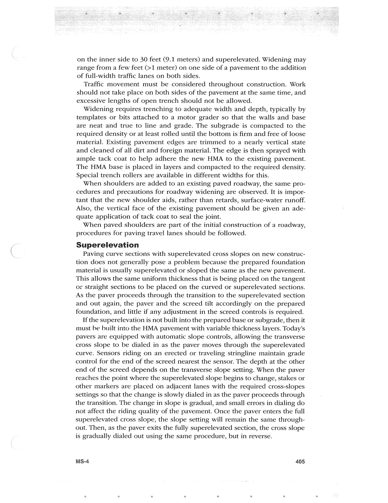

PDF page 439 · book page sequence 405


Searchable transcription
Unproofread OCR · 543 detected words; mean OCR confidence 96.07. Check technical values, symbols and table columns against the scan.
on the inner side to 30 feet (9.1 meters) and superelevated. Widening may range from a few feet (>1 meter) on one side of a pavement to the addition of full-width traffic lanes on both sides.
Traffic movement must be considered throughout construction. Work should not take place on both sides of the pavement at the same time, and excessive lengths of open trench should not be allowed.
Widening requires trenching to adequate width and depth, typically by templates or bits attached to a motor grader so that the walls and base are neat and true to line and grade. The subgrade is compacted to the required density or at least rolled until the bottom is firm and free of loose material. Existing pavement edges are trimmed to a nearly vertical state and cleaned of all dirt and foreign material. The edge is then sprayed with ample tack coat to help adhere the new HMA to the existing pavement. The HMA base is placed in layers and compacted to the required density. Special trench rollers are available in different widths for this.
When shoulders are added to an existing paved roadway, the same pro- cedures and precautions for roadway widening are observed. It is impor- tant that the new shoulder aids, rather than retards, surface-water runoff. Also, the vertical face of the existing pavement should be given an ade- quate application of tack coat to seal the joint.
When paved shoulders are part of the initial construction of a roadway, procedures for paving travel lanes should be followed.
Superelevation
Paving curve sections with superelevated cross slopes on new construc- tion does not generally pose a problem because the prepared foundation material is usually superelevated or sloped the same as the new pavement. This allows the same uniform thickness that is being placed on the tangent or straight sections to be placed on the curved or superelevated sections. As the paver proceeds through the transition to the superelevated section and out again, the paver and the screed tilt accordingly on the prepared foundation, and little if any adjustment in the screed controls is required.
If the superelevation is not built into the prepared base or subgrade, then it must be built into the HMA pavement with variable thickness layers. Today’s pavers are equipped with automatic slope controls, allowing the transverse cross slope to be dialed in as the paver moves through the superelevated curve. Sensors riding on an erected or traveling stringline maintain grade control for the end of the screed nearest the sensor. The depth at the other end of the screed depends on the transverse slope setting. When the paver reaches the point where the superelevated slope begins to change, stakes or other markers are placed on adjacent lanes with the required cross-slopes settings so that the change is slowly dialed in as the paver proceeds through the transition. The change in slope is gradual, and small errors in dialing do not affect the riding quality of the pavement. Once the paver enters the full superelevated cross slope, the slope setting will remain the same through- out. Then, as the paver exits the fully superelevated section, the cross slope is gradually dialed out using the same procedure, but in reverse.
MS-4 405